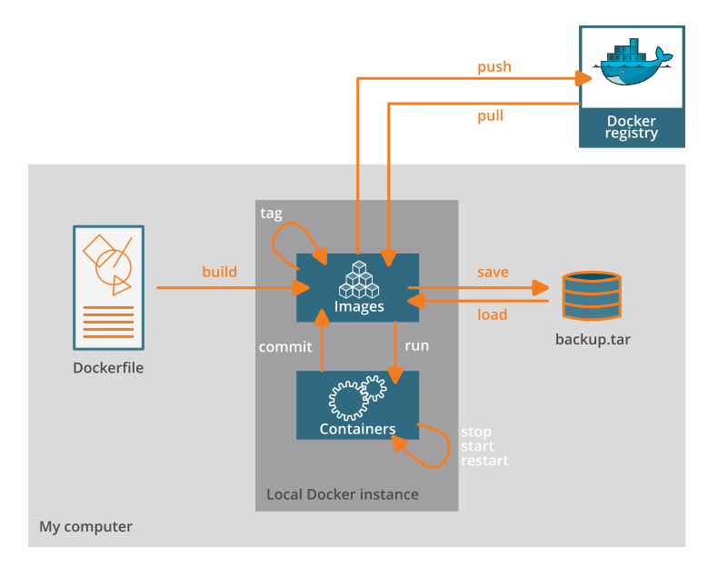
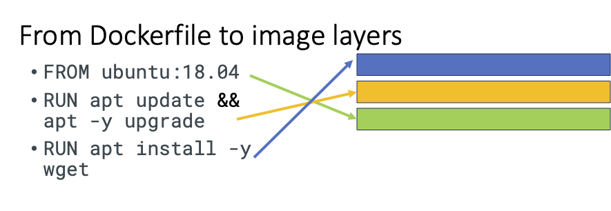

2. The Docker Dance
Learning outcomes
After having completed this chapter you will be able to:
- fetch and run Docker containers on their computer.
- interpret the instructions of a Dockerfile
- create simple Docker containers to run simple python/R scripts.
Material
- Unix command line E-utilities documentation
2.1 Docker Dance (Creating containers using Docker)
We will use Docker as an example to illustrate the development and use of containers.
Install Docker
Please follow the installation of the latest version of Docker Desktop for your operating system. It is described at Get Docker
Info
Commercial use of Docker Desktop in larger enterprises (more than 250 employees OR more than $10 million USD in annual revenue) requires a paid subscription. Note that ‘commercial use’ is interpreted quite broad.
Introducing the Dockerfile
The Dockerfile is the starting point of the Docker Dance which is schematically drawn here.

Now, let’s focus on the instructions for building Docker container images which are saved in a text file, named by default Dockerfile.
This is a basic recipe with three statements, one FROM and two RUN statements.
To follow along on your own, copy the content of the shown Dockerfile into a file named Dockerfile and save the file on your disk.
FROM ubuntu:18.04
RUN apt update && apt -y upgrade
RUN apt install -y wget
The FROM statement describes the parent image. Typically, an ‘operating’ system but you can also use an image of other parties as a starting point. This instruction creates the base layer.
FROM ubuntu:18.04
Recommendation
Pin the version of the OS of the base layer. There is an interesting publication regarding recommendation when manually crafting Dockerfiles. Rule 5 points out the importance of pinning versions of the base image but also system libraries or other installed software.
The RUN statement specifies the command to execute inside the image filesystem.
Think about it this way: every RUN line is essentially what you would run to install programs on a freshly installed Ubuntu OS. This command will be executed as root in the container.
RUN apt install wget
Each row in the recipe corresponds to a layer of the final image. 
Anatomy of the commands
With this basic Dockerfile, we will already start the build process which creates an image. For reference, have a look at the sketch of the Docker Dance above.
Building Docker image
The build command implicitly looks for a file named Dockerfile in the current directory:
docker build .
# or by specifying the exact file name
docker build --file Dockerfile .
Syntax: -file / -f
. stands for the context (in this case, current directory) of the build process. This makes sense if during the build process, we will copy files from local filesystem, for instance.
Info
Avoid contexts (directories) overpopulated with files (even if not actually used in the recipe).
You can define a specific name for the image during the build process.
Syntax: -t imagename:tag. If not defined :tag default is latest.
Exercise
docker build -t mytestimage:v1 .
The following output should be shown:
account@your-computer folder % docker build -f Dockerfile .
[+] Building 11.3s (7/7) FINISHED docker:desktop-linux
=> [internal] load build definition from Dockerfile 0.0s
=> => transferring dockerfile: 113B 0.0s
=> [internal] load .dockerignore 0.0s
=> => transferring context: 2B 0.0s
=> [internal] load metadata for docker.io/library/ubuntu:18.04 1.6s
=> [1/3] FROM docker.io/library/ubuntu:18.04@sha256:152dc042452c496007f07ca9127571cb9c29697f42acbfad72324b2bb2e43c98 3.4s
=> => resolve docker.io/library/ubuntu:18.04@sha256:152dc042452c496007f07ca9127571cb9c29697f42acbfad72324b2bb2e43c98 0.0s
=> => sha256:064a9bb4736de1b2446f528e4eb37335378392cf9b95043d3e9970e253861702 22.71MB / 22.71MB 2.6s
=> => sha256:152dc042452c496007f07ca9127571cb9c29697f42acbfad72324b2bb2e43c98 1.33kB / 1.33kB 0.0s
=> => sha256:f97a5103cca28097326814718e711c9c41b54853c26959d73495e40b1dd608f2 424B / 424B 0.0s
=> => sha256:d1a528908992e9b5bcff8329a22de1749007d0eeeccb93ab85dd5a822b8d46a0 2.31kB / 2.31kB 0.0s
=> => extracting sha256:064a9bb4736de1b2446f528e4eb37335378392cf9b95043d3e9970e253861702 0.7s
=> [2/3] RUN apt update && apt -y upgrade 3.9s
=> [3/3] RUN apt install -y wget 2.3s
=> exporting to image 0.1s
=> => exporting layers 0.1s
=> => writing image sha256:48bdb8036e8c97d6fde1e515291345425b78b3c33830768caad12ad98ea17b2c 0.0s
Once the build process is finished, the output should be Building ... FINISHED. Then you are good to go.
As next step, we will check with the command docker images that you see the newly built image in the list of images.
Exercise
docker images
Solution
account@your-computer folder % docker images
REPOSITORY TAG IMAGE ID CREATED SIZE
mytestimage v1 48bdb8036e8c 7 minutes ago 96.9MB
But right now, we investigate some additional statements for the recipes!
Additional statements for the Dockerfile
| command | what does it do? | Example |
|---|---|---|
| LABEL | Who is maintaining the container image | LABEL maintainer=”your name your.email@domain.org” |
| WORKDIR | all subsequent actions will be executed in that working directory. | WORKDIR ~ |
| COPY | lets you copy a local file or directory from your host (the machine from which you are building the image) | COPY ~/.bashrc . # COPY source destination |
| ADD | same, but ADD works also for URLs, and for .tar archives that will be automatically extracted upon being copied. | |
| ARG | available only while the image is built | |
| ENV | available for the future running containers | |
| ENTRYPOINT | The ENTRYPOINT specifies a command that will always be executed when the container starts. | |
| CMD | The CMD specifies arguments that will be fed to the ENTRYPOINT. |
Further readings
Difference between ADD and COPY explained here and here.
Difference between ARG and ENV explained here.
A longer recipe
Below is a longer recipe (save it in a text file named Dockerfile-ex2):
FROM ubuntu:18.04
LABEL version="1.0"
LABEL description="This is an example image\
that should download a picture once run."
WORKDIR /scratch
RUN apt-get update && apt-get -y upgrade
RUN apt-get install -y wget
ENTRYPOINT ["/usr/bin/wget"]
CMD ["https://cdn.wp.nginx.com/wp-content/uploads/2016/07/docker-swarm-hero2.png"]
Exercise
Let’s also build a Docker image based on the Dockerfile-ex2. What is the syntax?
Solution
account@your-computer folder % docker build -t download-image:v1 -f Dockerfile-ex2 .
...
account@your-computer folder % docker images
REPOSITORY TAG IMAGE ID CREATED SIZE
download-image v1 42f09c5ca259 34 seconds ago 96.9MB
Tips for Docker files
You should try to separate the Dockerfile into as many stages as possible, because this will allow for better caching.
For example for apt-get:
You must run apt-get update and apt-get install in the same command, otherwise you will encounter caching issues. Remember to use apt-get install -y, because you will have no control over the process while it’s building.
Running our Docker container
Now we want to use what is inside the image.
docker run creates a fresh container (active instance of the image) from a Docker (static) image, and runs it.
The format is:
docker run [docker options] <IMAGE NAME> [image arguments]
This means that arguments that affect the way Docker runs must always go before the image name, but arguments that are passed to the image itself must go after the image name.
Exercise
You can execute any program/command that is stored inside the image.
What happens if you execute ls in your current working directory: is the result the same?
docker run mytestimage:v1 /bin/ls
Answer
No, it is not. The listing of the working directory within the container will be displayed. In our case, this is /.
Exercise
You can execute any program/command that is stored inside the image.
docker run mytestimage:v1 /bin/whoami
docker run mytestimage:v1 cat /etc/issue
Answer
Anything surprising happened and why? The first command did not produce a valid output. Which command do you have to run to get a valid response? And what is the user?
List running containers
Let’s run another command in the shell.
docker ps
In this case, we would like list all running containers but we will get back an empty result.
account@your-computer ~ % docker ps
CONTAINER ID IMAGE COMMAND CREATED STATUS PORTS NAMES
This is normal since before each of the executed containers only ran a very short time. All commands were executed in milliseconds.
Now, let’s list all containers whether they are running or not:
docker ps -a
Now, the result is more insightful.
albot@Alexanders-MacBook-Pro ~ % docker ps -a
CONTAINER ID IMAGE COMMAND CREATED STATUS PORTS NAMES
6cdfeb6b412f mytestimage:v1 "whoami" 8 minutes ago Exited (0) 5 minutes ago determined_torvalds
e7a143e1b594 mytestimage:v1 "cat /etc/issue" 9 minutes ago Exited (0) 5 minutes ago elated_lalande
7fed0970b698 mytestimage:v1 "/bin/whoami" 10 minutes ago Created frosty_noether
The IDs that are shown can be useful for other docker commands like docker stop and docker exec in case the containers will run longer. The containers with the IDs 6cdfeb6b412f and e7a143e1b594 have been run succesfully and now have the status Excited. The last one has only been created since we received an error message. We will not go into more details now. In a chapter later on, we will shortly touch on the containers which run e.g. web applications.
But before we go on to second image we have created before, let’s run an container interactively.
docker run -it mytestimage:v1
Exercise
Verify what the operating system of the container is? One option is cat /etc/os-release.
Answer
root@5a7f73d47ff5:/# cat /etc/os-release
NAME="Ubuntu"
VERSION="18.04.6 LTS (Bionic Beaver)"
ID=ubuntu
ID_LIKE=debian
PRETTY_NAME="Ubuntu 18.04.6 LTS"
VERSION_ID="18.04"
HOME_URL="https://www.ubuntu.com/"
SUPPORT_URL="https://help.ubuntu.com/"
BUG_REPORT_URL="https://bugs.launchpad.net/ubuntu/"
PRIVACY_POLICY_URL="https://www.ubuntu.com/legal/terms-and-policies/privacy-policy"
VERSION_CODENAME=bionic
UBUNTU_CODENAME=bionic
Exercise
Run the command whoami, now in the container.
Answer
You might have seen before that you are indeed root. This also means that you can install other programms in this interactive shell.
Before we exit the shell in the container, we will have a quick look at the status of the container like we did above.
Exercise
Please open another terminal and type docker ps -a.
Answer
You will see that the current container 5a7f73d47ff5 has the status Up. So, it is indeed still running since we have started an interactive shell.
CONTAINER ID IMAGE COMMAND CREATED STATUS PORTS NAMES
5a7f73d47ff5 mytestimage:v1 "/bin/bash" 11 minutes ago Up 11 minutes vigorous_taussig
6cdfeb6b412f mytestimage:v1 "whoami" 57 minutes ago Exited (0) 57 minutes ago determined_torvalds
e7a143e1b594 mytestimage:v1 "cat /etc/issue" 58 minutes ago Exited (0) 58 minutes ago elated_lalande
7fed0970b698 mytestimage:v1 "/bin/whoami" 58 minutes ago Created frosty_noether
Exit the interactive container by typing exit so that we return to the shell of our host. Let’s come back to our second image we have created before.
First identify the id of this image by running docker images. When preparing the course, the ID was 42f09c5ca259.
Exercise
Run this container without any specific command. You might recall that a default command is defined in the recipe.
Answer
account@your-computer folder % docker run 42f09c5ca259
--2023-12-30 13:59:48-- https://cdn.wp.nginx.com/wp-content/uploads/2016/07/docker-swarm-hero2.png
Resolving cdn.wp.nginx.com (cdn.wp.nginx.com)... 104.18.10.5, 104.18.11.5
Connecting to cdn.wp.nginx.com (cdn.wp.nginx.com)|104.18.10.5|:443... connected.
HTTP request sent, awaiting response... 200 OK
Length: 446827 (436K) [image/png]
Saving to: 'docker-swarm-hero2.png'
0K .......... .......... .......... .......... .......... 11% 13.0M 0s
50K .......... .......... .......... .......... .......... 22% 12.1M 0s
100K .......... .......... .......... .......... .......... 34% 5.30M 0s
150K .......... .......... .......... .......... .......... 45% 6.02M 0s
200K .......... .......... .......... .......... .......... 57% 10.4M 0s
250K .......... .......... .......... .......... .......... 68% 9.34M 0s
300K .......... .......... .......... .......... .......... 80% 11.0M 0s
350K .......... .......... .......... .......... .......... 91% 2.73M 0s
400K .......... .......... .......... ...... 100% 250M=0.06s
2023-12-30 13:59:48 (7.41 MB/s) - 'docker-swarm-hero2.png' saved [446827/446827]
As you see, the png file is downloaded but do you find it on the host? Probably no since the container is isolated from the host.
Volumes
Docker containers are fully isolated. It is necessary to mount volumes in order to handle input/output files. By default, Docker containers cannot access data on the host system. This means you cannot use host data in your containers. All data stored in the container will be lost when the container exits.
You can solve this like this:
-v /path/in/host:/path/in/container: This bind mounts a host file or directory into the container. Writes to one will affect the other. Note that both paths have to be absolute paths, so you often want to usepwd/some/path
Exercise
For this exercise, we will bind-mount the current directory of our user on the host machine to the WORKDIR as defined in the Dockerfile-ex2.
docker run --volume $(pwd):/scratch download-image:v1
Answer
--2023-12-30 16:55:20-- https://cdn.wp.nginx.com/wp-content/uploads/2016/07/docker-swarm-hero2.png
Resolving cdn.wp.nginx.com (cdn.wp.nginx.com)... 104.18.10.5, 104.18.11.5
Connecting to cdn.wp.nginx.com (cdn.wp.nginx.com)|104.18.10.5|:443... connected.
HTTP request sent, awaiting response... 200 OK
Length: 446827 (436K) [image/png]
Saving to: 'docker-swarm-hero2.png'
0K .......... .......... .......... .......... .......... 11% 13.0M 0s
50K .......... .......... .......... .......... .......... 22% 12.1M 0s
100K .......... .......... .......... .......... .......... 34% 5.30M 0s
150K .......... .......... .......... .......... .......... 45% 6.02M 0s
200K .......... .......... .......... .......... .......... 57% 10.4M 0s
250K .......... .......... .......... .......... .......... 68% 9.34M 0s
300K .......... .......... .......... .......... .......... 80% 11.0M 0s
350K .......... .......... .......... .......... .......... 91% 2.73M 0s
400K .......... .......... .......... ...... 100% 250M=0.06s
2023-12-30 16:55:21 (7.41 MB/s) - 'docker-swarm-hero2.png' saved [446827/446827]
As you see, the png file is downloaded and do you find it on the host in the current working directory?
If all went fine, you should see the file docker-swarm-hero2.png in your current directory.
2.2 Container registries (e.g. Docker Hub)
Images can be stored locally or shared in a registry. Docker hub is the main public registry for Docker images. Let’s search the keyword “ubuntu”
Exercise
docker pull ubuntu
Answer
debian@debian:~$ docker search ubuntu
NAME DESCRIPTION STARS OFFICIAL AUTOMATED
ubuntu Ubuntu is a Debian-based Linux operating sys… 16831 [OK]
websphere-liberty WebSphere Liberty multi-architecture images … 296 [OK]
ubuntu-upstart DEPRECATED, as is Upstart (find other proces… 115 [OK]
ubuntu/nginx Nginx, a high-performance reverse proxy & we… 111
neurodebian NeuroDebian provides neuroscience research s… 106 [OK]
ubuntu/squid Squid is a caching proxy for the Web. Long-t… 76
ubuntu/apache2 Apache, a secure & extensible open-source HT… 70
ubuntu/bind9 BIND 9 is a very flexible, full-featured DNS… 69
open-liberty Open Liberty multi-architecture images based… 62 [OK]
ubuntu/mysql MySQL open source fast, stable, multi-thread… 58
ubuntu/prometheus Prometheus is a systems and service monitori… 55
ubuntu-debootstrap DEPRECATED; use "ubuntu" instead 52 [OK]
ubuntu/kafka Apache Kafka, a distributed event streaming … 38
ubuntu/postgres PostgreSQL is an open source object-relation… 34
ubuntu/redis Redis, an open source key-value store. Long-… 22
ubuntu/dotnet-aspnet Chiselled Ubuntu runtime image for ASP.NET a… 17
ubuntu/dotnet-runtime Chiselled Ubuntu runtime image for .NET apps… 14
ubuntu/jre Distroless Java runtime based on Ubuntu. Lon… 13
ubuntu/dotnet-deps Chiselled Ubuntu for self-contained .NET & A… 13
ubuntu/zookeeper ZooKeeper maintains configuration informatio… 12
ubuntu/grafana Grafana, a feature rich metrics dashboard & … 9
ubuntu/prometheus-alertmanager Alertmanager handles client alerts from Prom… 9
ubuntu/memcached Memcached, in-memory keyvalue store for smal… 5
ubuntu/cortex Cortex provides storage for Prometheus. Long… 4
ubuntu/cassandra Cassandra, an open source NoSQL distributed … 2
debian@debian:~$
There are a lot of alternatives to Docker hub for image registries depending on the needs of the organisation or company. Some examples are shown below:
| Logo | Name |
|---|---|
| Quay.io | |
| Amazon ECR | |
| Github CR |
- Get the latest image or latest release
In this case, the Ubuntu image with the tag latest is downloaded.
albot@Alexanders-MacBook-Pro toto % docker pull ubuntu
Using default tag: latest
latest: Pulling from library/ubuntu
005e2837585d: Pull complete
Digest: sha256:6042500cf4b44023ea1894effe7890666b0c5c7871ed83a97c36c76ae560bb9b
Status: Downloaded newer image for ubuntu:latest
docker.io/library/ubuntu:latest
- Check the versions of Ubuntu present and fetch version 18.04 using tags
debian@debian:~$ docker pull ubuntu:18.04
18.04: Pulling from library/ubuntu
064a9bb4736d: Pull complete
Digest: sha256:152dc042452c496007f07ca9127571cb9c29697f42acbfad72324b2bb2e43c98
Status: Downloaded newer image for ubuntu:18.04
docker.io/library/ubuntu:18.04
debian@debian:~$
When you ran this command, Docker first looked for the image on your local machine, and when it couldn’t find it, pulled it down from a cloud registry of Docker images called Docker Hub.
What other repositories are possible? Have a look at the web site https://biocontainers.pro/ which is a specific directory of Bioinformatics related tools. the images are stored in Docker hub and/or Quay.io (RedHat registry) these images are normally created from Bioconda
Example: FastQC https://biocontainers.pro/#/tools/fastqc
debian@debian:~$ sudo docker pull biocontainers/fastqc:v0.11.9_cv7
v0.11.9_cv7: Pulling from biocontainers/fastqc
9ff7e2e5f967: Pull complete
59856638ac9f: Pull complete
6f317d6d954b: Pull complete
a9dde5e2a643: Pull complete
675cac559d07: Pull complete
0e6dd20ee818: Pull complete
374c558e71da: Pull complete
0df3c64bb19a: Pull complete
e936d7784cf9: Pull complete
4dfd8d164cc5: Pull complete
473490461998: Pull complete
8f5e491552e6: Pull complete
a66ab3a674d9: Pull complete
18f922275a6f: Pull complete
6d0254e75eec: Pull complete
Digest: sha256:8ff2a75c6864edec10c92b3a085cc2f3b207107363c83772feab711d13022c3d
Status: Downloaded newer image for biocontainers/fastqc:v0.11.9_cv7
docker.io/biocontainers/fastqc:v0.11.9_cv7
debian@debian:~$
Where are these images stored? On Linux, they usually go to /var/lib/. Docker is very greedy in storage, so regular cleaning is necessary. We will see later on how you can do the purging. Sometimes, it is also useful to get more information about the images. You can do this via
docker image inspect
And lastly to complete the Docker Dance, we shortly show how to upload own containers to the DockerHub registry.
Note: You will have to use a public repository on DockerHub.
First, you will have to create an account on DockerHub.
Usually, as first step before the upload of the image to the registry, you will use docker login. In this case, the command assumes that you’d like to login to DockerHub.
As you have seen before, we have created two images based on simple recipes. Imagine that you’d like to share them publically. You will use the command docker push.
But before you need to rename the docker image so that the push command knows where the destination is.
docker tag download-image:v1 yourhubusername/download-image:v1
docker push yourhubusername/download-image:v1
Useful resources
Dockerfile reference
Best practices for manual creation
Ten simple rules for writing Dockerfiles for reproducible data science